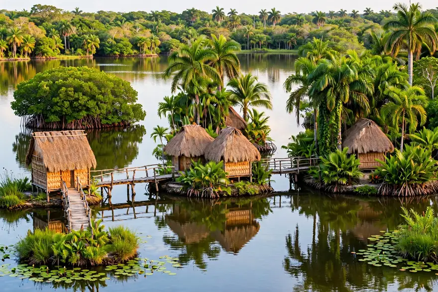
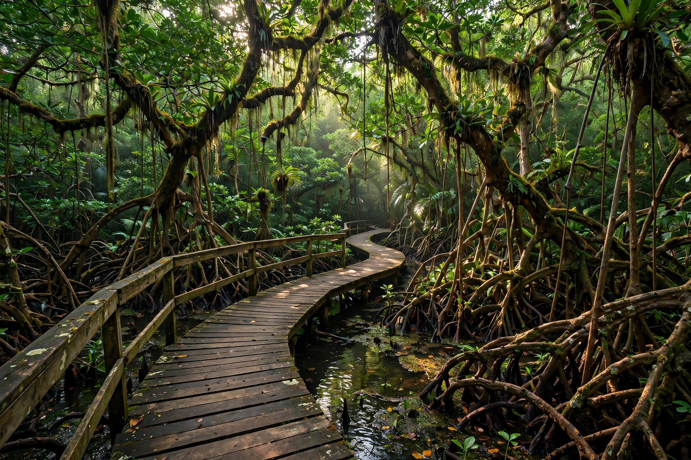
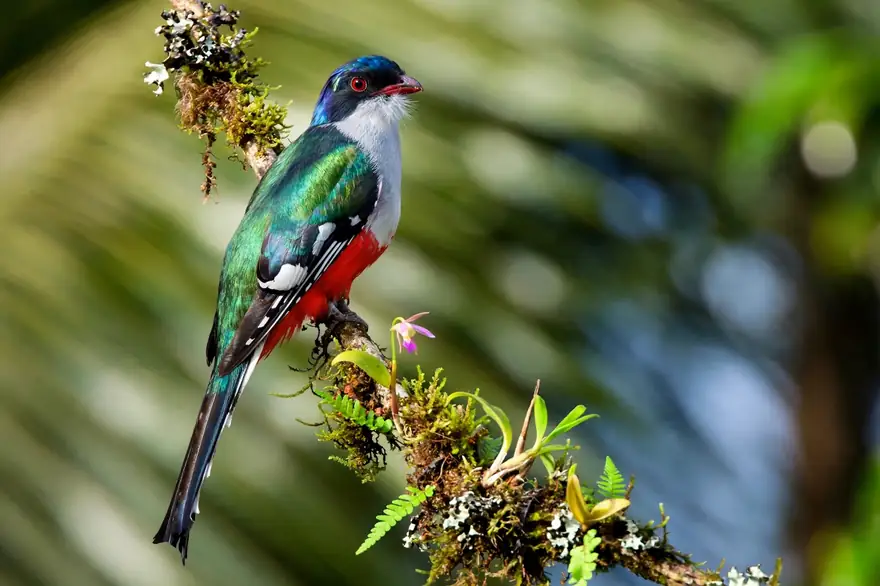
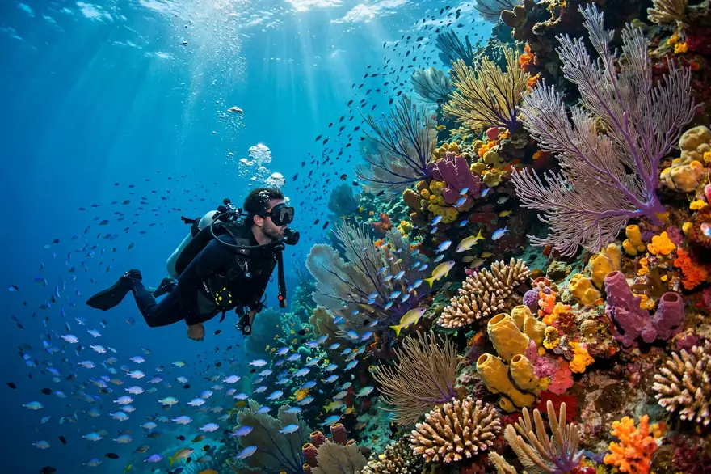
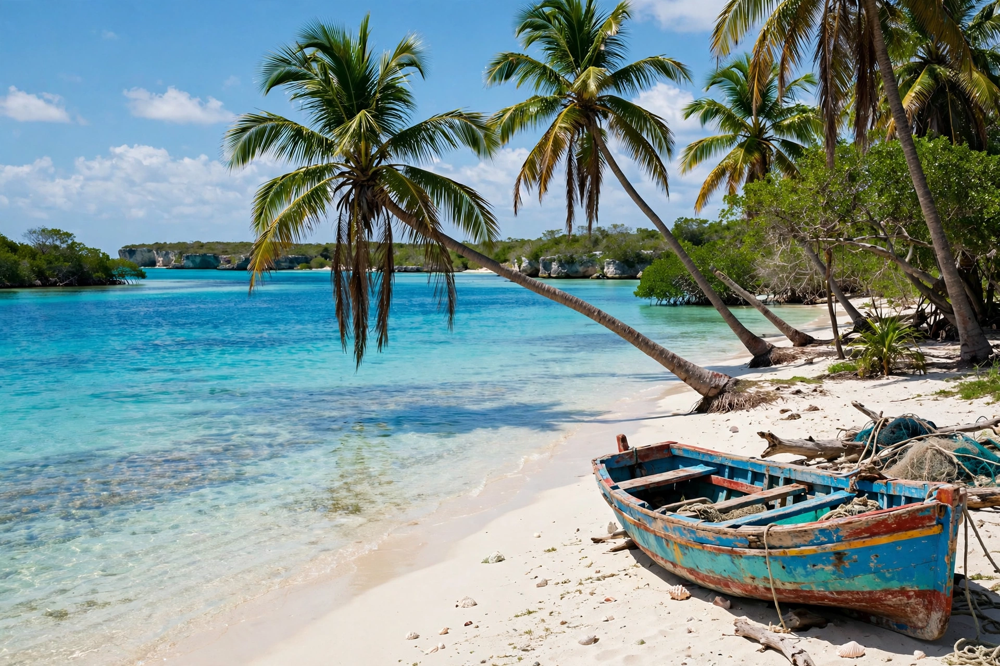
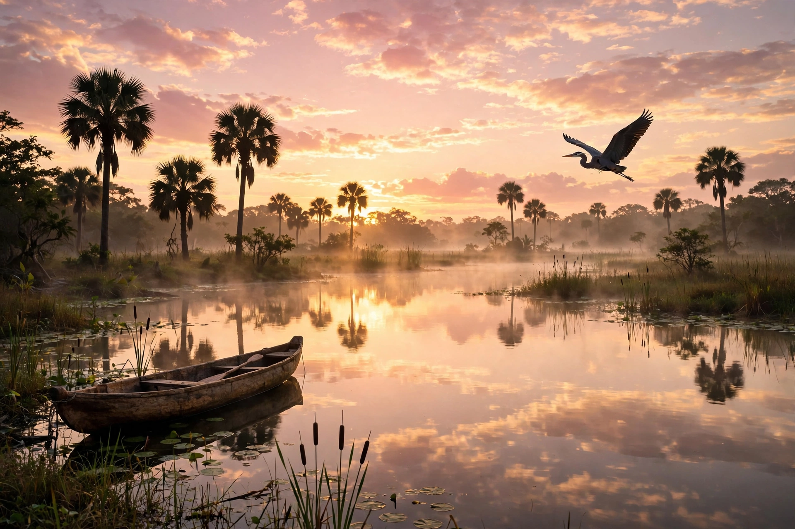
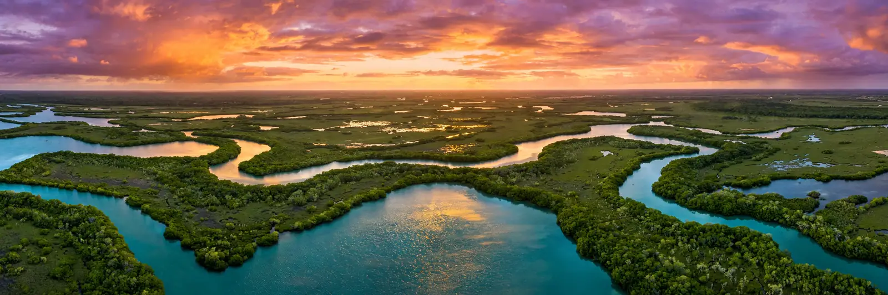
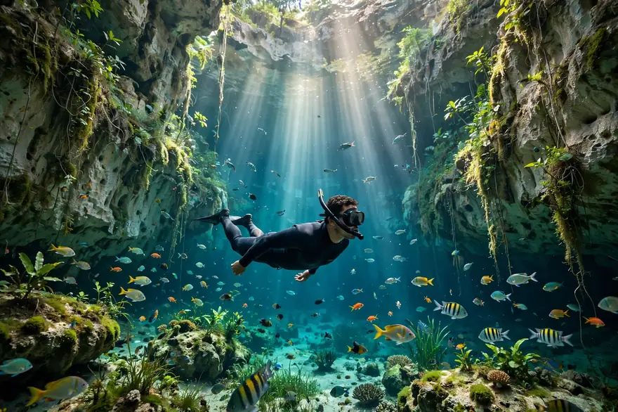

La guía de viaje de la Ciénaga de Zapata, Matanzas: el humedal más grande del Caribe. Busca lugares, animales, actividades y servicios.
Todo lo que necesitas para planear tu visita, organizado por temas.

Lagunas, cenotes, playas y criaderos: los imprescindibles.
Explorar →
Rincones que casi nadie conoce: caletas, senderos y aldeas.
Descubrir →
Cocodrilo cubano, zunzuncito, tocororo, flamencos y manatíes.
Conocer →
Buceo, snorkel, senderismo, avistamiento de aves y pesca.
Ver →
Taínos, piratas, carboneros y Bahía de Cochinos.
Leer →
Sabores costeros: trucha, langosta, caldo de pescado y más.
Probar →
Cómo llegar, mejor época, consejos y preguntas frecuentes.
Planear →
Casas de renta, taxis, restaurantes y guías locales.
Reservar →Lo último publicado: nuevos rincones, datos y descubrimientos.
Números que explican por qué la Ciénaga de Zapata es uno de los tesoros ecológicos más importantes del planeta.
Lo que todos preguntan antes de venir.
Sí. Los puntos de baño y buceo (Cueva de los Peces, Caleta Buena, Punta Perdiz, playas) son zonas habilitadas y vigiladas. Los cocodrilos viven en zonas delimitadas como el criadero y áreas del interior, no en las playas turísticas.
Con 2–3 días ves lo esencial: un día de mar (buceo/snorkel + Playa Girón), un día de laguna (Guamá + criadero) y medio día de senderos o Salinas. Si amas las aves o el buceo, quédate una semana: no te arrepentirás.
Puedes ir por tu cuenta en carro u ómnibus Viazul, pero para senderos, avistamiento de aves y cuevas necesitas guía local obligatorio (además de que ellos conocen los rincones secretos). Los tours desde La Habana y Varadero lo incluyen todo.
Es el único lugar donde en un mismo día puedes bucear en un cenote, almorzar junto a cocodrilos, ver el ave más pequeña del mundo y terminar en una playa caribeña con historia. Ningún otro destino cubano concentra tanta naturaleza, historia y aventura juntas.
Sí: el Hotel Guamá (cabañas palafíticas sobre la laguna), hoteles en Playa Larga y Playa Girón, y casas de renta en los poblados. Mira las opciones en Servicios y reserva con tiempo en temporada alta (diciembre–abril).
¿Ya visitaste la Ciénaga? Cuéntanos tu experiencia y ayuda a otros viajeros. 👇
Comparte esta guía con quien ame la naturaleza. Cada visita consciente ayuda a proteger este tesoro para las próximas generaciones. 🌿